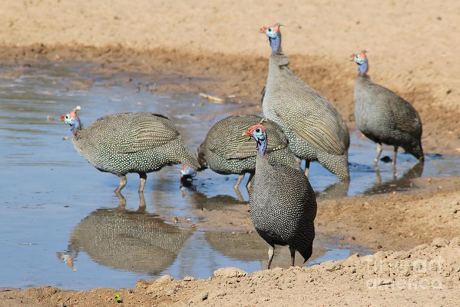
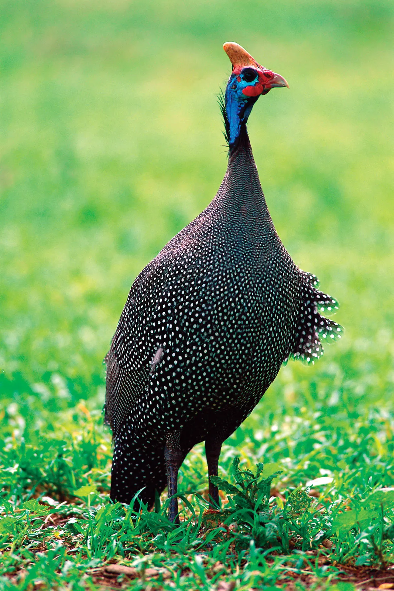
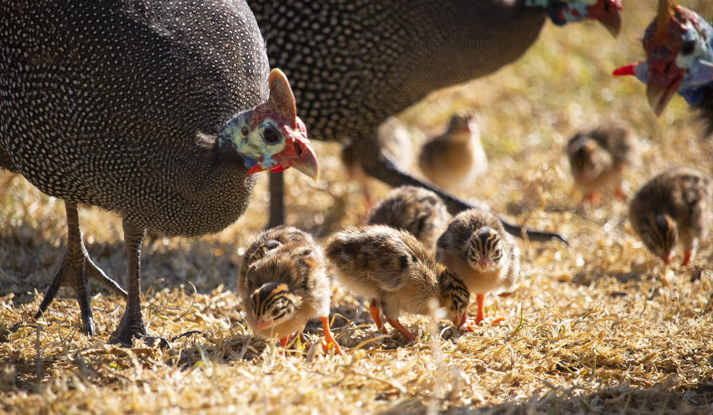
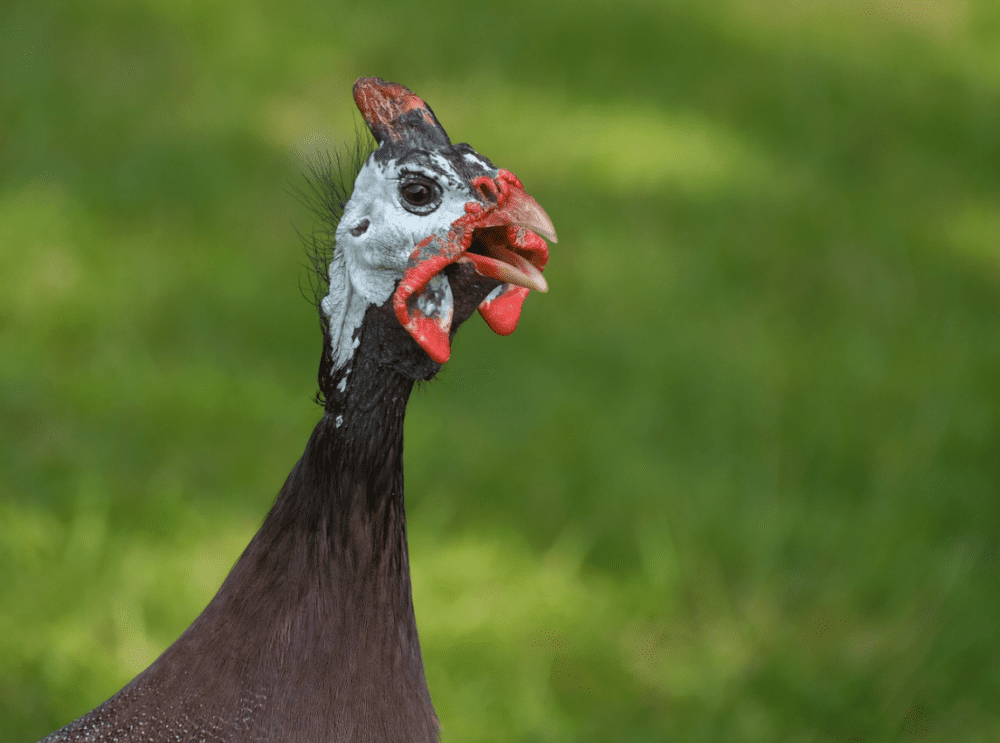

This portal is aims to bring together the Guinea Fowl
enthusiasts accros the globe and facilitate sharing of information
and experiences.

Why you should get Guinea Fowls:

Guinea fowls are truly majestic creatures

Guinea Fowls lay eggs and reproduce just like
domestic chickens. They also run fast and fly.

Guinea Fowls will wake up to the sunrise everyday
with a lovely song which they sing as a choir.
Raising Guinea Fowls has changed my life. Guineas are
not only beautiful and interesting, they are also very efficient domestic
animals. My neighbors love their voices especially in the morning.